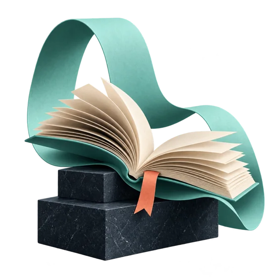
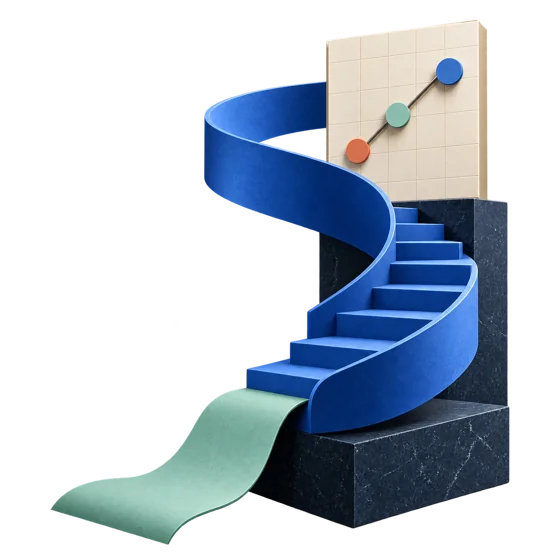
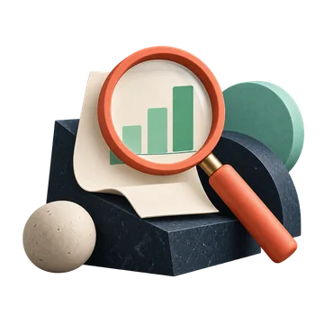
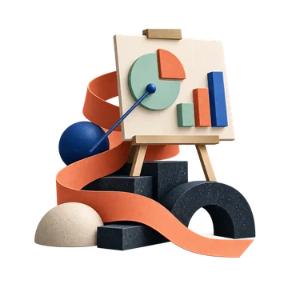
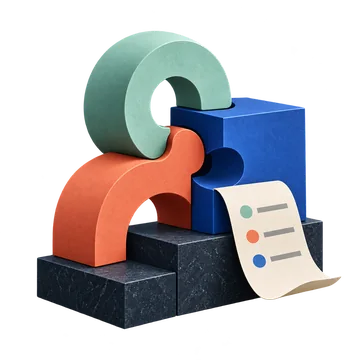
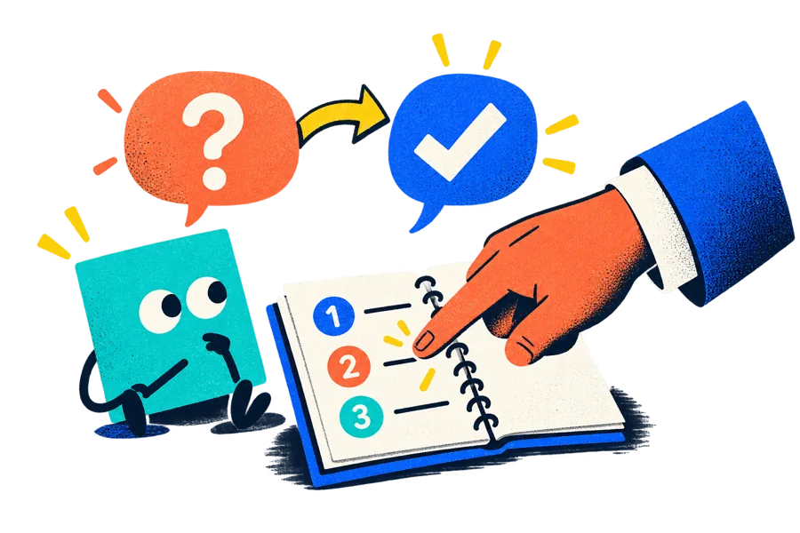

Разбираем
подход
Ведущий показывает процесс на рабочей задаче.
НОЯБРЬ 2026 — ЯНВАРЬ 2027Старт 9 ноября · онлайн
Три месяца учёбы, практики и стратегии
в сообществе FIELD.
Для руководителей, предпринимателей, специалистов и всех любопытных — с любым уровнем подготовки и своими задачами. Вместе создаём систему навыков.
280 евроили28 тысяч рублей
вместо 350 евро или 35 тысяч рублейУчёбаРазобраться и настроить
ПрактикаПрименить в своей работе
СтратегияУвидеть следующий шаг
Кэмп, практика и стратегия.
Три направления — одна программа.

Личная база знаний, сайт, автоматизация в n8n, презентации, бренд и работа с клиентами.

Подкаст «Гости из будущего» о том, как ИИ меняет работу и нас самих, и вебинары «Корпоративный ИИ» о том, как компании начинают работать с ИИ.
Все 36 живых событий доступны вам. Новичкам достаточно идти по маршруту кэмпа. Остальные встречи выбирайте под свои задачи; записи входят в участие.
НАЧИНАЕМ С ВАШЕЙ РАБОТЫ
Выберите знакомую задачу.
Посмотрите, что можно собрать с ИИ
и где этому учиться в FIELD.

Отчёты собираются вручнуюСейчасВы сводите таблицы, документы и заметки, а потом ещё раз проверяете цифры.
С ИИСоберёте цепочку от исходных материалов до сводки, выводов и презентации. Проверка результата остаётся за вами.
Кэмп · неделя 5
Каждое предложение — с нуляСейчасУслуги, цены и опыт лежат в разных местах. Клиент меняет условия — вы начинаете заново.
С ИИСоберёте знания о своей работе. На их основе ИИ помогает готовить и пересобирать персональное предложение и план.
Вторая память · 19 ноябряСейчасМатериалов много, а найти нужный фрагмент и применить его в работе трудно.
С ИИОбъедините заметки, книги и документы в Obsidian или Notion. Подключите ИИ для поиска, текстов и планов по своим материалам.
Вторая память · 13 ноябряСейчасНужно придумывать посты, писать, рисовать и отвечать клиентам — часто всё сразу.
С ИИПопробуете выпускать серии постов и визуалов, а отзывы и переписки превращать в темы, которые волнуют ваших клиентов.
SMM · 17 декабряСейчасИдея остаётся в заметках: неясно, с чего начать и как довести прототип до рабочего варианта.
С ИИПройдёте путь от задачи и референсов до публикации. Разберёте формы, сервисы и доработку сайта на примерах участников.
Вайбкодинг · 1 и 8 декабря
Одни действия повторяются сноваСейчасПереносите данные, собираете подборки и запускаете одни и те же действия вручную.
С ИИВ кэмпе запустите первое поручение по расписанию. На практике познакомитесь с n8n и связками таблиц, мессенджеров и почты.
Кэмп + n8n · 10 декабряНе нужно внедрять всё сразу. Возьмите одну свою задачу, соберите решение и доработайте его вместе с сообществом.
Разбираемся вместе. Пробуем у себя.
Возвращаемся с вопросами.
19:00 Москва18:00 Израиль17:00 CETЗимнее время основных эфиров
Ведущий показывает процесс на рабочей задаче.
Применяете подход к своим материалам. Сохраняете вопросы и находки.
Разбор работ, ответы на вопросы, следующий шаг.
В своём
ритме
Дополнительные события — по календарю ниже. Посещать все встречи не обязательно.

ПОДДЕРЖКА МЕЖДУ ЭФИРАМИ
На первом занятии настроите ИИ-ментора. Он поможет разложить задачу на шаги и разобраться в материале. Вопросы по вашей работе принесёте преподавателям и сообществу.
ИИ-ментор — специально созданный для кэмпа скилл, то есть упакованный набор инструкций для ИИ. Он ведёт по программе кэмпа, объясняет, как устроено сообщество, отвечает на базовые вопросы и помогает с личными и рабочими задачами. Ответы ментора вы проверяете сами, а живая поддержка команды дополняет его работу.
Шесть учебных недель
и финальная защита.
Начинаем 9 ноября.
Проект показываете 21 декабря.
Соберёте папку с материалами и правилами работы, познакомитесь с ИИ-ментором и выберете три задачи из своей рутины.
9 ноября — быстрый старт. 13 ноября — выбираем первую задачу и разбираем сложности с настройками.
Ведёт: Дмитрий ЭйгенсонНастроите инструкции, проекты и память ChatGPT. Разберётесь, какие данные можно передавать ИИ и какие действия требуют вашего подтверждения.
16 ноября — настройки. 18 ноября — мастер-класс Сергея Долгова по безопасности. 20 ноября — сравниваем работу до и после настройки.
Ведут: Дмитрий Эйгенсон, Сергей ДолговЗапустите повторяющуюся задачу: например, сборку отчёта или подборку материалов. Проверите, что происходит без вашего постоянного участия.
23 ноября — постановка поручений. 27 ноября — запускаем сценарии участников и разбираем ошибки.
Ведёт: Дмитрий ЭйгенсонСоберёте серию изображений в своём стиле. Научитесь работать с референсами и исправлять отдельные части картинки.
30 ноября — ИИ-дизайнер и арт-директор. 4 декабря — выставка и разбор работ участников.
Ведёт: Денис ДомрачевВыберете свой процесс с отчётами, таблицами или презентациями и соберёте цепочку от исходных материалов до результата, который можно проверить.
7 декабря — документы, таблицы и презентации. 11 декабря — разбираем ваши цепочки и дорабатываем их.
Ведёт: Дмитрий ЭйгенсонСоедините базу знаний, поручения и ассистентов. Подготовите проект, проверите границы автоматизации и сохраните свои материалы.
14 декабря — сборка системы. 18 декабря — предзащита: показываете проект и получаете вопросы для доработки.
Ведёт: Дмитрий ЭйгенсонПредставите свой рабочий процесс и результаты его проверки. После финала кэмпа продолжите практику в FIELD.
21 декабря — защита проектов. С 24 декабря по 12 января — каникулы. Программа FIELD продолжается с 13 января.
Ведёт: Дмитрий ЭйгенсонВ программе возможны несущественные изменения.
Кроме основного кэмпа — ещё 22 события.
«Гости из будущего» — подкаст раз в месяц: ведущая Иоганна Алексанян обсуждает с экспертами, что происходит с людьми, профессиями и обучением, когда ИИ берёт на себя всё больше работы. Три выпуска: 11 ноября, 9 декабря и 20 января.
«Корпоративный ИИ» — серия вебинаров Андрея Смирнова и Юрия Рапопорта о том, как компании начинают работать с ИИ. Каждый вебинар посвящён одному вопросу и длится около часа вместе с ответами на вопросы. Четыре живых эфира в ноябре и декабре в 12:00 по Москве; записи двух октябрьских вебинаров доступны с первого дня в сообществе.
«Стол заказов» — участники оставляют рабочие задачи в одноимённой рубрике сообщества, и эксперт в прямом эфире доводит некоторые из них от постановки до работающего решения. Каждый участник может принести свою задачу.
«Корпоративный ИИ» · вебинарОдин вопрос за эфир
Андрей Смирнов и Юрий Рапопорт
12:00 Москва · 11:00 Израиль · 10:00 CET
«Гости из будущего» · подкастРазговор с экспертами
Иоганна Алексанян · гость Валентин Васин
19:00 Москва · 18:00 Израиль · 17:00 CET
Воркшоп · встреча 1 из 2Делаем вместе
Александр Ярыгин (Glake, Россия)
12:00 Москва · 11:00 Израиль · 10:00 CET
Перейти ко второй части19 ноября · Моя вторая памятьРазбор кейсаРеальный опыт
Эксперт-юрист
19:00 Москва · 18:00 Израиль · 17:00 CET
Воркшоп · встреча 2 из 2Делаем вместе
Александр Ярыгин
19:00 Москва · 18:00 Израиль · 17:00 CET
Вернуться к первой части13 ноября · Моя вторая память«Корпоративный ИИ» · вебинарОдин вопрос за эфир
Андрей Смирнов и Юрий Рапопорт
12:00 Москва · 11:00 Израиль · 10:00 CET
Стол заказовВаша задача в эфире
Юлия Кветна (Латвия)
19:00 Москва · 18:00 Израиль · 17:00 CET
Воркшоп · встреча 1 из 2Делаем вместе
Юлия Кветна (Латвия)
19:00 Москва · 18:00 Израиль · 17:00 CET
Перейти ко второй части8 декабря · Вайбкодим сайт«Корпоративный ИИ» · вебинарОдин вопрос за эфир
Андрей Смирнов и Юрий Рапопорт
12:00 Москва · 11:00 Израиль · 10:00 CET
Воркшоп · встреча 2 из 2Делаем вместе
Юлия Кветна
19:00 Москва · 18:00 Израиль · 17:00 CET
Вернуться к первой части1 декабря · Вайбкодим сайт«Гости из будущего» · подкастРазговор с экспертами
Иоганна Алексанян и приглашённые эксперты
19:00 Москва · 18:00 Израиль · 17:00 CET
Мастер-классПриём в действии
Андрей Смирнов (Россия)
19:00 Москва · 18:00 Израиль · 17:00 CET
Стол заказовВаша задача в эфире
Эксперт определяется по задаче
19:00 Москва · 18:00 Израиль · 17:00 CET
«Корпоративный ИИ» · вебинарОдин вопрос за эфир
Андрей Смирнов и Юрий Рапопорт
12:00 Москва · 11:00 Израиль · 10:00 CET
Разбор кейсаРеальный опыт
Валентин Васин (Россия)
19:00 Москва · 18:00 Израиль · 17:00 CET
Мастер-классПриём в действии
Денис Домрачев (Аргентина)
19:00 Москва · 18:00 Израиль · 17:00 CET
Мастер-классПриём в действии
Сергей Васильев (Израиль/Индия)
19:00 Москва · 18:00 Израиль · 17:00 CET
Мастер-классПриём в действии
Денис Домрачев (Аргентина)
19:00 Москва · 18:00 Израиль · 17:00 CET
Воркшоп · встреча 1 из 2Делаем вместе
Денис Домрачев
19:00 Москва · 18:00 Израиль · 17:00 CET
Перейти ко второй части26 января · ИИ и путь клиента«Гости из будущего» · подкастРазговор с экспертами
Иоганна Алексанян и приглашённые эксперты
19:00 Москва · 18:00 Израиль · 17:00 CET
Разбор кейсаРеальный опыт
Эксперт из отрасли
19:00 Москва · 18:00 Израиль · 17:00 CET
Воркшоп · встреча 2 из 2Делаем вместе
Денис Домрачев
19:00 Москва · 18:00 Израиль · 17:00 CET
Вернуться к первой части19 января · ИИ и путь клиентаКоманда НИИ Нейросетей
и сообщество Field
Разбираем ваши задачи, делимся опытом и помогаем довести решения до результата.
Нажмите на имя или фотографию, чтобы познакомиться с экспертом.
Личная эффективность с ИИ, агенты и рабочие процессы
Основатель проекта НИИ Нейросетей, лектор и соавтор курсов «Клон», «Начальник нейросетей» и «Я нанял нейросеть». Предприниматель с 20-летним опытом, владелец международного креативного агентства BigD, практикующий маркетолог и специалист по нейросетям. Опытный преподаватель и наставник.
Ведёт основной маршрут «Начальник нейросетей — 6»: от первой задачи и настройки ИИ до поручений, документов и своей рабочей системы.
CEO НИИ Нейросетей · работа с данными, корпоративный ИИ
Специалист по инвестиционному проектированию с 35-летним опытом работы в разных секторах экономики. Занимал руководящие должности в консалтинговой компании, инвестиционном агентстве, банках, страховых компаниях и на промышленных предприятиях.
Вместе с Андреем Смирновым ведёт серию вебинаров «Корпоративный ИИ». Отвечает на вопросы об участии.
Визуальная коммуникация, маркетинг и путь клиента
Бренд-стратег и арт-директор. Был партнёром агентства «Логика», затем стал бренд-директором «ВкусВилл», где одним из первых инициировал использование нейросетей в упаковке. Отвечает за образовательные программы НИИ Нейросетей. В маркетинге с 2011 года, амбассадор нейросетей с 2022 года.
Ведёт визуальную неделю кэмпа, бренд-бук и воркшопы по работе с клиентами. Показывает, как применять ИИ в маркетинге.
Безопасность ИИ, работа с данными и границы автоматизации
AI-архитектор в OrbitalBeam (официальный партнёр OpenAI и Anthropic), кофаундер B2B SaaS HRtech-платформы Archipelago, автор методики оценки LLM-ансамблей Cross Model Repertory Grid. Ранее руководил центром проектных интеграций в X5, был директором по цифровой трансформации и внедрению AI в IThub и директором центра электронных сервисов Сбера.
Проводит мастер-класс по безопасности 18 ноября. Разбирает правила работы с данными и действия, для которых нужно подтверждение человека.
коммьюнити-менеджер Field
Кинопродюсер, основатель Expert Opener. Помогает экспертам и стартапам сформулировать собственную ценность и превратить её в бизнес- и маркетинговую стратегию. В Field ведёт подкаст «Гости из будущего» о том, как ИИ меняет работу и жизнь. Комьюнити-менеджер FIELD.
Развивает сообщество, соединяет участников и экспертов. Продюсер и ведущая ежемесячного эфира «Гости из будущего» — о человеке и жизни рядом с ИИ.
Базы знаний в Obsidian и Notion, работа с нейросетями и агентами
Основатель бюро AI-решений Glake и автор блога «AI для людей». Специализируется на базах знаний, нейросетях и агентах. В EdTech занимал должности CMO, COO и CCO.
Ведёт два воркшопа «Моя вторая память». Вместе собираете личную базу знаний и применяете её к предложениям клиентам, планированию и аналитике.
Вайбкодинг: сайты и решения для рабочих задач
Эксперт в IT и AI с более чем 20-летним практическим опытом. Работала на стыке бизнеса и технологий в крупных международных компаниях — от анализа и продуктовой стратегии до внедрения цифровых и AI-решений. Специализируется на прикладном ИИ, автоматизации рабочих процессов и создании продуктов без команды разработки.
Проводит «Стол заказов» и воркшопы по созданию сайта. Вместе с участниками проходит путь от задачи и референсов до публикации.
Корпоративный ИИ, автоматизация процессов и n8n
Основатель агентства «Смирнов Автоматизирует». Реализовал более 50 проектов по автоматизации — от ИИ-менеджеров и ассистентов до систем обработки документов, тендеров, аналитики и внутренних процессов. Помогает компаниям выбирать задачи для автоматизации и доводить решения с ИИ до запуска.
Ведёт введение в n8n и мини-курс в записи: показывает, как связать таблицы, мессенджеры и почту в рабочий процесс. Вместе с Юрием Рапопортом ведёт серию вебинаров «Корпоративный ИИ».
Тексты, SMM и контент с ИИ
15 лет работал в сфере коммуникаций в Сбере, Альфа-Банке и Билайне. Руководил командами в соцмедиа и клиентских коммуникациях. Его проекты отмечены отраслевыми наградами, включая Tagline Gold, Effie и «Серебряный Меркурий». Сейчас руководит коммуникационным агентством «Будет видно» и является соучредителем Института психолого-экономических исследований. Занимается репутационным маркетингом и вопросами управления информационным полем.
11 ноября — гость подкаста «Гости из будущего». 17 декабря разбирает тексты, рассылки, визуал и обратную связь клиентов.
Речь, коммуникации и презентации
Режиссёр, журналист и тренер по речи и коммуникациям. Преподаёт деловую риторику и готовит к выступлениям, презентациям и переговорам по интегральному методу, который объединяет работу с состоянием, техникой речи, риторикой и психологией. В профессии 10 лет; обучил более 300 человек индивидуально и провёл свыше 5 000 часов тренингов.
Тренер по речи и коммуникациям. В январе ведёт мастер-класс «Презентуем в стиле Apple»: от идеи и структуры до выступления.
Рабочие задачи. Живые люди.
Результаты, которые можно объяснить.
Раньше — 3–4 часа еженедельного мониторинга. Теперь настроенный процесс собирает выпуск со ссылками на источники; Анжела проверяет и корректирует результат.
«Практически ноль ручного труда, только корректировка»Читать историю ↗
Собрала для ИИ контекст проекта, правила безопасности и порядок проверки. Из восьми задач, оставленных руководительницей на время отпуска, закрыла три в первый день.
«Начальница ушла в отпуск на три недели, оставила мне восемь задач. Я сегодня с помощью этого скилла закончила три»Читать историю ↗
Передала ИИ файлы и логику консолидации отчётов. Получила сводку, которую осталось проверить и поправить; раньше ручная сборка занимала до двух часов.
«Ты как будто взял достаточно опытного сотрудника и дальше только донастраиваешь его, добавляешь знаний»Читать историю ↗
Собрала примерно за день рабочую версию Assessment Hub с подбором тестов, видео и гайдами. Решение встроили в платформу компании.
«Я так вдохновлена тем, что обычный человек может что-то сделать»Читать историю ↗
По образцу готовой презентации собрала новую с другими данными и продала её клиенту. По её описанию, Claude сэкономил минимум неделю работы.
«Чем сильнее режиссёр, тем талантливее работы»Читать историю ↗
Настраивает контекст под свои функции и переносит идеи из проектов участников на собственные задачи. Подключает инструменты по необходимости.
«Есть те, кто играется, и те, кто работает и внедряет, — они в разных весовых категориях»Читать историю ↗
Опыт участников предыдущих программ НИИ. Результат зависит от задачи, практики и возможностей инструментов.
С вашей работы.
И того, что вам хочется отдать ИИ.
ДО Без ИИ
Открываю файлы, свожу цифры, переношу данные в отчёт.
ПОСЛЕ С ИИ
Передаю материалы и шаблон. ИИ собирает черновик, я проверяю цифры и выводы.
ДО Без ИИ
Для каждой публикации заново собираю идеи, тексты и примеры оформления.
ПОСЛЕ С ИИ
Задаю аудиторию и стиль. Получаю варианты текста и визуала, выбираю и редактирую.
ДО Без ИИ
Повторяю поиск, открываю источники и вручную собираю полезное.
ПОСЛЕ С ИИ
Описываю поручение и правила отбора. ИИ собирает подборку, я проверяю источники.
Учебные примеры. Начинаем с одной своей задачи; результат всегда проверяет человек.
Один абонемент.
Все три направления.
С ноября 2026 по январь 2027.
Первое занятие кэмпа — 9 ноября.
В своём темпе: основной маршрут — в кэмпе, остальные встречи выбираете под свои задачи.
ЗА ВСЮ ПРОГРАММУ
280 евроили28 тысяч рублей
Скидка 20% до 23 октября 2026 года — вместо 350 евро или 35 тысяч рублейУчастник
Рубли — российская карта, оплата на сайте НИИ; евро — международная карта через Allpay. После оплаты приглашение придёт на вашу почту.
Условия участия собираем «под вас» по запросу. Количество мест ограничено.
от 100 000 ₽
Тариф VIP оформляем по запросу.
Оплата вносится один раз за весь срок участия — без подписки и автоматических списаний. Подписки на ИИ-сервисы в стоимость не входят.
Перед оплатой прочитайте оферты и политики обработки данных. На платёжной странице проверьте тариф и сумму.
Доступ — с 1 ноября до 31 января 2027 года. Перед окончанием доступа записи и материалы можно скачать. Участникам зимнего интенсива мы предложим специальные условия продления после января 2027 года.
В сообществе есть последовательный маршрут для старта и события, которые вы выбираете сами.
Выбираете рубли (российская карта, оплата на сайте НИИ) или евро (международная карта, Allpay). Указываете электронную почту для приглашения и оплачиваете участие одним платежом.
После оплаты получаете приглашение в сообщество и инструкции по электронной почте.
Сообщество открывается 1 ноября, за неделю до кэмпа; если вы оплатили позже, доступ откроется сразу после оплаты. До старта можно задать вопросы и изучить записи. 9 ноября начинаете кэмп: собираете рабочее место и выбираете первую задачу.
Хотите понять, что подойдёт именно вам? Спросите Нейрония о своей задаче.
Да. Маршрут кэмпа начинается с рабочего места, базовых настроек и выбора первой задачи. Технический опыт и навыки программирования не требуются. Между встречами вы пробуете подход на своих материалах.
Нет. Основной маршрут новичка — занятие в понедельник, практика в течение недели и совместная работа в пятницу. Остальные события выбирайте под свои задачи. Записи всех эфиров входят в участие.
Заложите два основных эфира в неделю и время, чтобы попробовать задания на своей работе. Эфиры начинаются в 19:00 по Москве, зимой это 18:00 в Израиле и 17:00 CET. Вебинары «Корпоративный ИИ» и первая встреча воркшопа «Моя вторая память» — в 12:00 по Москве. Объём самостоятельной работы зависит от вашей задачи. Все дополнительные темы можно выбирать по интересу и смотреть в записи.
Кэмп строится на ChatGPT: понадобятся десктопное приложение ChatGPT и платный тариф не ниже Plus (20 долларов в месяц). Сообщество работает в Telegram, живые эфиры проходят в Zoom. На отдельных практиках разбираем Obsidian или Notion для базы знаний, n8n для автоматизации и инструменты создания сайтов и визуалов. Подписки на ИИ-сервисы в стоимость участия не входят. ChatGPT официально не работает в России, поэтому доступ и оплату подписки участник организует самостоятельно; если нужна помощь с доступом, напишите нам. Те, кто работает в Claude, смогут применить те же подходы, но отдельно Claude на кэмпе не разбираем.
Можно посмотреть запись и применить материал в своём темпе. Записи и материалы доступны до 31 января 2027 года; перед окончанием доступа их можно скачать.
Сообщество открывается 1 ноября, а при более поздней оплате — сразу после неё. С первого дня доступны записи более 30 прошедших эфиров с методичками, презентациями и саммари, записи двух октябрьских вебинаров «Корпоративный ИИ» и летнего кэмпа НН-4, рубрика «Стол заказов». До старта кэмпа можно задать вопросы и познакомиться с участниками в чате. Доступ действует до 31 января 2027 года.
На первом занятии вы получите собственного ИИ-ментора. Команда НИИ Нейросетей отвечает в сообществе каждый день, выделенный сотрудник техподдержки помогает с инструментами и доступами, эксперты отвечают на вопросы по своим темам. По пятницам на Let’s Work ведущие разбирают то, что не получилось за неделю. На «Столе заказов» эксперт разбирает задачи участников — от постановки до работающего решения. Агентов и автоматизации под ключ мы не проектируем и не настраиваем: свою систему вы собираете сами при нашей поддержке.
Финальная защита кэмпа — 21 декабря. Зимний цикл FIELD идёт с ноября 2026 по январь 2027. С 24 декабря по 12 января — каникулы; с 13 января продолжаются практика и экспертные встречи. Доступ к сообществу действует до 31 января 2027 года, а участникам зимнего интенсива мы предложим специальные условия продления.
Приглашение в сообщество придёт на адрес электронной почты, указанный при оплате. Если приглашения нет, проверьте «Спам» и напишите Юрию Рапопорту.
Условия опубликованы в оферте для рублёвой оплаты и Terms and Conditions для международной оплаты. Если нужна помощь с конкретной ситуацией, обратитесь к Юрию Рапопорту.
ВАША ПЕРВАЯ ЗАДАЧА УЖЕ ЕСТЬ В ВАШЕЙ РАБОТЕ
Кэмп «Начальник нейросетей — 6» и сообщество ИИ-практиков FIELD.
Старт 9 ноября · три месяца учёбы и практики.
Актуальные документы НИИ Нейросетей. Ознакомьтесь с ними перед оплатой.